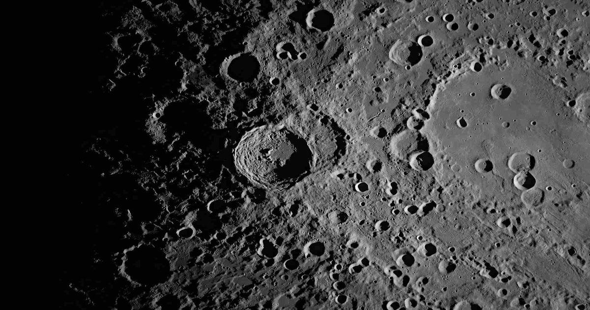

Астрономы вычислили скорость сжатия Луны по разломам на ее поверхности
Ученые выяснили, что из-за остывания недр Луна продолжает сжиматься и уменьшаться в размерах.
К такому выводу пришли астрономы, детально изучившие тысячи молодых разломов и хребтов на поверхности спутника Земли.